3.1.2.4 BLE Deep Sleep Advertising
Getting Started with Peripheral Building Blocks
3.1.2.4 BLE Deep Sleep Advertising
Introduction
This document will help users to enable Deep sleep mode with BLE Advertisements on WBZ451 Curiosity board using MPLAB Code Configurator(MCC). In this basic application example, the Deep Sleep advertisement interval will be set to 960 millisecond. The advertisement interval will dictate the application Deep sleep time.
Users can choose to just run the precompiled Application Example hex file on the WBZ451 Curiosity Board and experience the demo or can go through the steps involved in developing this Application from scratch.
It is recommend to follow the examples in order, by learning the basic concepts first and then progressing to the more advanced topics.
Recommended Reading
Hardware Requirement
| Tool | Quantity |
|---|---|
| WBZ451 Curiosity Board | 1 |
| Micro USB cable | 1 |
| Power Debugger/Multimeter | 1 |
SDK Setup
Software Requirement
Smartphone App
Light Blue
Programming the precompiled hex file or Application Example
Programming the hex file using MPLABX IPE
-
Precompiled Hex file is located in "<Harmony Content Path>\wireless_apps_pic32cxbz2_wbz45\apps\ble\building_blocks\peripheral\deep_sleep_adv\hex" folder
-
For the instructions, refer to Programming A Device.Note: Users must choose the correct Device and Tool information.
Programming the Application using MPLABX IDE
-
Follow the steps mentioned in Running a Precompiled Example .
-
Open and program the Application Example
"ble_deep_sleep_adv.x" located in "<Harmony Content Path>\wireless_apps_pic32cxbz2_wbz45\apps\ble\building_blocks\peripheral\deep_sleep_adv\firmware"using MPLABX IDE
For more details on how to find the Harmony Content Path, refer to Installing MCC Plugin
Demo Description
This Application Example enables users to enter Deep sleep mode while transmitting Connectable, Undirected BLE Advertisements. On power on reset demo will enter "Deep Sleep Mode", when the USR_BTN(SW2) is pressed the device onboard led(green) starts blinking which denotes start of advertisements, Device will enter Deep sleep mode periodically based on the advertisement interval which is set to 960 milliseconds for this example. When device connects with the mobile App the onboard led start to glow solid, which indicates the connection established and the device will enter Standby Sleep Mode during Idle state.
Testing
Current Consumption Measurement
Connect the Multimeter/Power Debugger to Power Measurement Header J6. Power on the Board. If using Power Debugger, users can use Data Visualizer to measure the current consumption.
Users of this Early adopter package must go through the known issues document and understand the limitations if any with the current low power mode implementation.
Developing this Application from scratch using MPLAB Code Configurator
-
Create a new MCC Harmony Project. For more details, refer to2.5 Creating a New MCC Harmony Project
-
Import component configuration --This step helps users setup the basic components and configuration required to develop this application. Users should follow the instructions mentioned here to import the component configuration.
Note: Import and Export functionality of component configuration will help users to start from a known working setup of configuration -
Accept Dependencies or satisfiers, select "Yes".
- Verify if the Project Graph
window has all the expected configuration.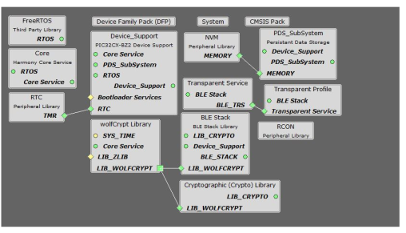
Verifying Deep Sleep, Advertisement, System Sleep and RTC Clock Source Configuration
- Select BLE_Stack component in
project graph.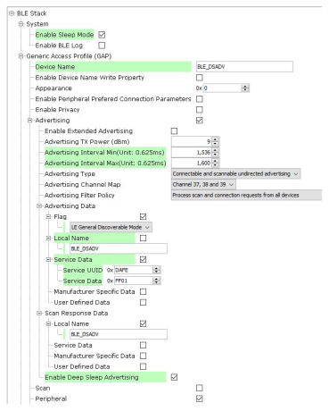Note: Advertising Interval Min can be modified to adjust Deep Sleep Advertising interval. Advertisement payload can be configured by user here.
- Select clock configuration.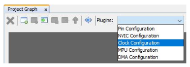
- Configure RTC clock
configuration.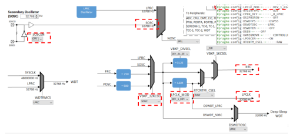
- Select Device Support Configure PMU
Mode configuration.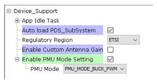
- Configure LED GPIO Configuration.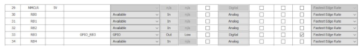Note: The above GPIO configuration is used for indication of the device state in this example and is optional. The configuration bits will be generated after user generates the code.
Generating a Code
Follow the instructions on how to generate a code, as described in 14.2 MPLAB Code Configurator(MCC) Code Generation.
The BLE stack initialization routine excuted during Application Initialization can be found in project files. This intitialization routine is automatically generated by the MCC. This call initializes and configures the GAP, GATT, SMP, L2CAP and BLE middleware layers.
| Source Files | Usage |
|---|---|
| app.c | Application State machine, includes calls for Initialization of all BLE stack (GAP,GATT, SMP, L2CAP) related component configurations |
| app_ble.c | Source Code for the BLE stack related component configurations, code related to function calls from app.c |
| app_ble_handler.c | All GAP, GATT, SMP and L2CAP Event handlers |
| app_ble_dsadv.c | Source Code for utilizing the deep sleep advertising functionality |
| device_deep_sleep.c | Source Code for deep Sleep and wake up related system configurations |
Header Files
ble_gap.h: This header file contains BLE GAP functions and is automatically included in the app.c file
Function Calls
MCC generates and adds the following code to initialize the BLE Stack GAP, GATT, L2CAP and SMP in APP_BleStackInit() and Deep Sleep Advertising Functionality in APP_BleDsadvStart(flag) functionAPP_BleStackInit() and APP_BleDsadvStart(flag) are the API's that will be called inside the Applications Initial State -- APP_STATE_INIT in app.c.
System Manual Configurations
The following code modifications must be done to utilize the deep sleep Advertising functionality.
Step 1 - Initialization.c
- CLK_Initialize();This API call will be originally available in SYS_Initialize function and should be called part of _on_reset() function inside initialization.c file.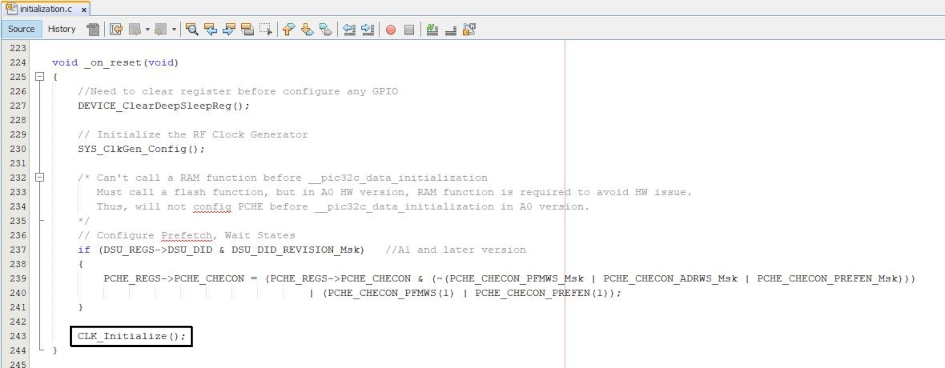
-
void SYS_Initialize (void* data)
The below generated code should be removed from the SYS_Initialize Function.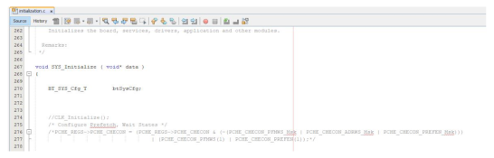Add the below code inside SYS_Initialize Function.
DEVICE_DeepSleepWakeSrc_T wakeSrc; DEVICE_GetDeepSleepWakeUpSrc(&wakeSrc); if (wakeSrc == DEVICE_DEEP_SLEEP_WAKE_NONE) //Initialize RTC if wake source is none(i.e power on reset) { RTC_Initialize(); }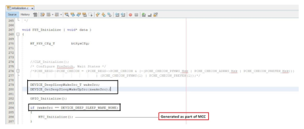Step 2 - startup_xc32.c
- PCHE_SetupRam()
Copy the below code into the startup_xc32.c
__attribute__((ramfunc, long_call, section(".ramfunc"),unique_section)) void PCHE_SetupRam(void) { // Set Flash Wait states and enable pre-fetch // clear PFMWS and ADRWS PCHE_REGS->PCHE_CHECON = (PCHE_REGS->PCHE_CHECON & (~(PCHE_CHECON_PFMWS_Msk | PCHE_CHECON_ADRWS_Msk | PCHE_CHECON_PREFEN_Msk))) | (PCHE_CHECON_PFMWS(1) | PCHE_CHECON_PREFEN(1)); // write completion delay for(int i=1; i<10; i++) { asm ("NOP"); } }
Copy the below code into the Reset_Handler Handler Function after __pic32c_data_initialization() Function Call.
if (!(DSU_REGS->DSU_DID & DSU_DID_REVISION_Msk)) //HW A0 version { PCHE_SetupRam(); }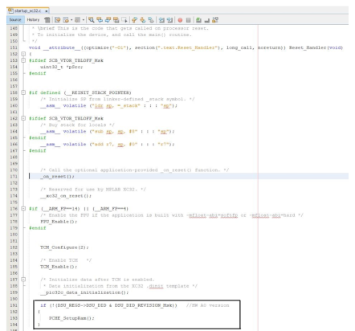Step 3 - heap_4.c
Modify with the following code inside heap_4.c (available as part of FreeRTOS-->MemMang)
static uint8_t ucHeap[ configTOTAL_HEAP_SIZE ]; --> Original Code static uint8_t __attribute__((section (".bss.ucHeap"), noload)) ucHeap[ configTOTAL_HEAP_SIZE ]; -->Modified Code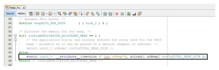Step 4 - device_deep_sleep.c(optional)
Configure the peripheral ports to minimize the current consumption. Those configurations must be placed in the function “Device_GpioConfig”.According to WBZ451 curiosity board pins assignment, the function provides example code to setup the GPIO pins and the peripheral. To setup the board configuration, refer to the configuration examples.The “Device_GpioConfig” is inside “DEVICE_EnterDeepSleep” to enter Deep sleep.
- PCHE_SetupRam()
User Application Development
Include
- user action is required as mentioned here
app_ble_dsadv.hinto app.c file
- definitions.h in all the files where
port pin macros are used.Note:
definitions.his not specific to just port peripheral, instead it should be included in all application source files where peripheral functionality will be exercised.
Enter Deep Sleep mode
DEVICE_EnterDeepSleep(false,0);
This API can be called to put the device to deep sleep mode.
Start Deep Sleep Advertisement
- APP_BleDsadvStart(false);
This API can be called to start the Deep sleep Advertising.
This API is called in the Applications initialstate - APP_STATE_INIT in app.c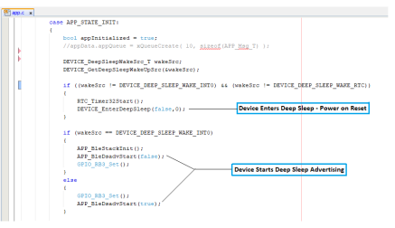Users can exercise various other BLE Advertisement functionalities by using BLE Stack API.